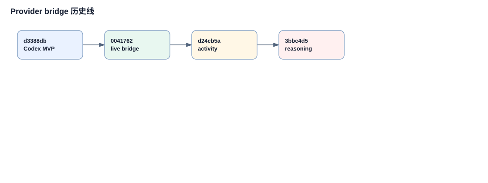
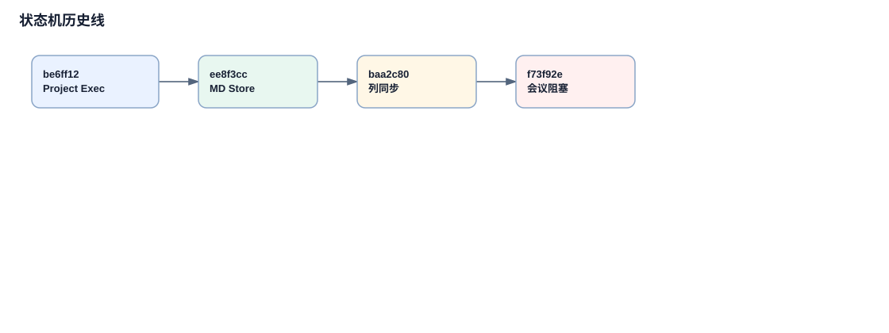

项目执行、Provider Bridge 与会议阻塞的设计来源
本页从当前复杂设计反推历史来源：Project Execution 状态机、MarkdownProjectStore 字段增长、Hermes/Codex adapter、Codex bridge、meeting blocker。只把 Git 能验证的部分写成确定结论。
历史演进链路
项目执行主流程来自 v0.6.0
`be6ff12` 把 workflow pipeline、agent dispatch、review system 和项目 UI 大量并入，因此当前 project execution 应从这个 commit 开始读。
MarkdownProjectStore 承载复杂字段
`ee8f3cc` 创建 `app/project_store.py`。随着 executionPolicy、attempts、evidence、reviewHistory、meetingBlocker 等字段加入，项目数据模型从单纯看板变成执行审计记录。
Hermes adapter 先进入
`40e917a` 引入 HermesProvider，并在文件注释中说明通过 public CLI surfaces 隔离 Hermes 私有状态。
Codex harness 和 bridge 后进入
`d3388db` 创建 CodexProvider，`0041762` 创建 `codex_bridge.py`。当前 Codex 文件含未提交扩展，历史解释要分层。
状态机有后补修复
`baa2c80` 修复 project execution state transitions，说明当前 transition、列同步、完成状态不是一次成型。
meeting blocker 是后续扩展
`f73f92e` 添加 blocking meeting requests for project tasks，并在 `project_store.py` 加入 `meetingBlocker_json` 和 `meetingBlockerHistory_json`。
演进图

最后一层未提交扩展应按当前现场代码理解，不当作 Git 历史事实。

项目执行状态机先出现，再经历状态转移修复和会议阻塞扩展。
关键代码摘录
复杂字段增长
COMPLEX_JSON_FIELDS = {
"executionPolicy_json", "attempts_json", "evidence_json",
"reviewResult_json", "reviewHistory_json",
"acceptanceHistory_json", "stateHistory_json",
"meetingBlocker_json", "meetingBlockerHistory_json",
}这些字段解释了为什么项目 store 不再只是保存看板列和任务标题，而是保存执行、评审、验收和会议阻塞状态。
Hermes 隔离边界
"""Hermes provider adapter for My Virtual Office.
This module is intentionally isolated from the OpenClaw discovery/runtime paths.
It talks to Hermes through public CLI surfaces only...
"""这段注释由 Git blame 指向 `40e917a`，因此“通过公开 CLI surface 隔离私有状态”是可验证设计边界。
关键概念补充
1. Codex Bridge
出现位置：`app/providers/codex_bridge.py`。它让 Codex 从 opt-in harness 进入实时 chat/run/activity/control 链路。
2. Project Execution State Transition
出现位置：`app/server.py`。它把任务状态、看板列、attempt、review、acceptance 结果同步到一致流程状态。